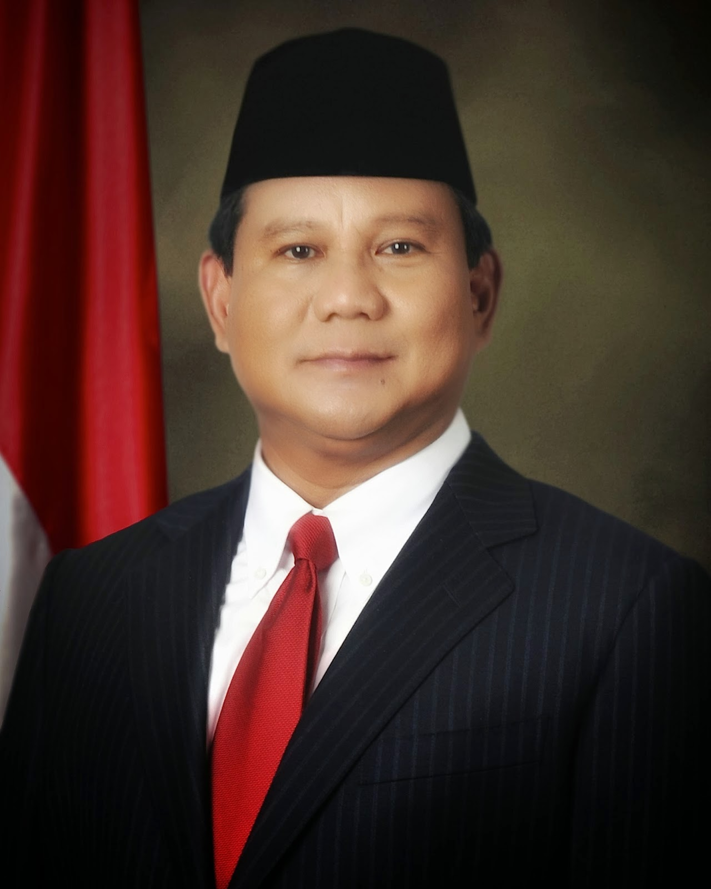

Prabowo
Prabowo 是 Indonesia 第八任总统. 他今年 73 岁，肥胖，诚实、善良、有领导才能、真诚 - Prabowo shì Indonesia dì bā rèn zǒngtǒng.
Tā jīnnián 73 suì, féipàng, chéngshí, shànliáng, yǒu lǐngdǎo cáinéng, zhēnchéng.
他的身高在印度尼西亚人中属于平均水平。他有一头直发. 我们选择. Prabowo 是因为他是 Indonesia 总统.
Tā de shēngāo zài yìn dù ní xī yǎ rén zhōng shǔyú píngjūn shuǐpíng. Tā yǒu yītóu zhí fā.
Wǒmen xuǎnzé Prabowo shì yīnwèi tā shì Indonesia zǒngtǒng.